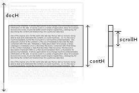

Thirteenth Parallel /archive/dhtml-scrollbars/
By popular request here is a quick tutorial on how to make your own scrollbar.
Making a scrollbar is actually deceptively easy and the principles described here should be applicable to many development environments. However, the examples will use DHTML and require a browser that supports DOM Level 1.
First off we'll set up the HTML elements that will make up the scrolled content and the scrollbar. We have a "content" element placed inside a "container" element, which will act as a view port. There will then be an element for the scroll-area, and another element for the scrollbar itself.
<div id="container">
<div id="content">
.... lots of content here ....
</div>
</div>
<div id="scrollArea">
<div id="scroller"></div>
</div>
The "container" div should be set up with height, width and clip values or overflow set to hidden; "content" should only have width set, this is so we can get the computed height through code; "scrollArea" should have height and width set; and "scroller" needs width set and an initial height, we will change its height through code so that the scrollbar's height is relative to the length of the document.
The diagram on the next page shows a sample set up with the variables we are interested in. Note, that in this case the scrollArea's height is the same as the container's height - for the code we will use scrollAreaH as well.

If you want your scrollbar to work with older browsers or you are using Flash the code here will be different. But for the time being we will use DOM1 and the attribute "offsetHeight":
var docH = document.getElementById("content").offsetHeight;
We retrieve the heights of the other elements we are interested in in the same way:
var contH = document.getElementById("container").offsetHeight;
var scrollAreaH = document.getElementById("scrollArea").offsetHeight;
Now, fundamentally it's all about ratios. The ratio of the container to the content div is the same as the ratio of the scroller and the scroll area. We use ratios for positioning of the content div and also for calculating the height of the scroller. So:
(content height) / (container height) = (scroll area height) / (scroll bar height)
from this we can calculate scrollH:
var scrollH = (contH * scrollAreaH) /docH;
if(scrollH < 15) scrollH = 15;
document.getElementById("scroller").style.height = Math.round(scrollH) + "px";
Note that we are giving the scroller a minimum size, this is to make sure it is big enough to use.
Since this is not a drag and drop tutorial we'll be using Youngpup's domDrag object. If you are using your own drag script or someone else's, the underlying principle is the same. As the scroller is dragged you limit its position and monitor its y position.
For Youngpup's drag object we make the scrollbar draggable using the following code:
var s = document.getElementById("scroller");
scrollDist = Math.round(scroller.scrollAreaH - scroller.scrollH);
Drag.init(s,null,0,0,0,scrollDist);
This also limits the horizontal and vertical movement of the dragged object. But we now need to create an ondrag function for the scroller:
s.onDrag = function (x,y) {
// insert scrollbar code
}
At this point we should have a scrollbar that looks and feels like it's working. All that is left is to make so that dragging the scrollbar actually scrolls the content.
Now, to position the content we go back to the ratios:
(scroller top) / (scroll area height) = (0 - content top) / (content height - container height)
Since we want "content top", we can rearrange this to get:
var scrollY = parseInt(s.style.top); scrollDist = Math.round(scroller.scrollAreaH - scroller.scrollH) var docY = 0 - (scrollY * (docH - contH) / scrollDist)
And then set its position using:
document.getElementById("content").style.top = docY + "px";
This code goes inside ondrag like so:
s.onDrag = function (x,y) {
var scrollY = parseInt(s.style.top);
var docY = 0 - (scrollY * (docH - contH) / scrollDist)
document.getElementById("content").style.top = docY + "px";
}
So that's it. You should now have a basic scrollbar that looks something like this. From this it should be relatively straight forward to add up/down buttons (if appropriate) and style it to your liking.